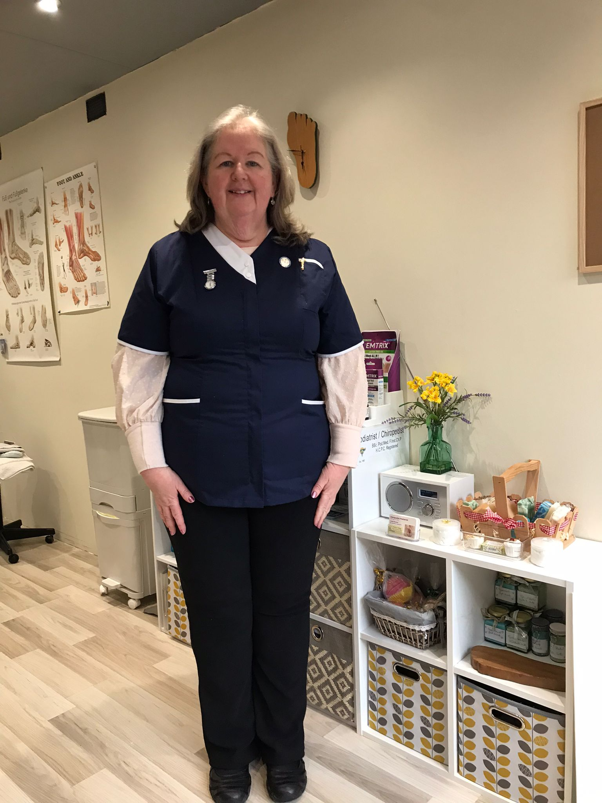

"Linda is always patient, professional and takes the time to listen. My feet have improved so much after becoming one of her patients."
Susan J.
Experienced podiatrist - new patients welcome!
BSc.Pod.Med · F.Inst.Chp · HCPC registered · Practising since 1997
What we offer
A complete foot care appointment covering nails, hard skin and overall foot health, tailored to you.
From £50
Professional thinning, trimming and filing - a quicker appointment for healthy, comfortable nails.
From £48
Careful treatment to relieve pain and help the nail grow back properly.
From £36
Removal of corns and hard skin to relieve pressure and discomfort.
Corns from £30 · Calluses from £42
Assessment and treatment of verrucae, with a plan suited to how stubborn they're being.
From £40
Specialist assessment and ongoing care for patients with diabetes, protecting long-term foot health.
From £50
Rebuilding the appearance of fungal or damaged nails for a natural, healthy look.
From £36 per nail
A warming wax treatment for hands or feet - soothing for dry skin and tired joints.
From £48
Meet your podiatrist
BSc.Pod.Med · F.Inst.Chp · HCPC Registered Chiropodist & Podiatrist
Linda Pearson is an HCPC-registered Chiropodist and Podiatrist with almost 30 years of experience providing professional foot care across North Wales. Since qualifying in 1997, she has built a reputation for delivering high-quality, compassionate treatment, helping patients of all ages stay comfortable, active and pain-free.
A Fellow of the Institute of Podiatrists (IOP), Linda also served for ten years as President of the Institute, reflecting her commitment to maintaining the highest standards of professional practice and patient care.
The practice welcomes both new and existing patients, offering routine foot care, children's foot care, diabetic foot assessments and treatment for a wide range of foot conditions. Every patient receives personalised care in a friendly, professional environment, with treatment tailored to their individual needs.
The clinic offers accessible facilities with ample parking, making visits convenient and stress-free. A carefully selected range of quality foot care and environmentally friendly products is also available to help patients maintain healthy feet between appointments.

Registered with
What our patients say
"Linda is always patient, professional and takes the time to listen. My feet have improved so much after becoming one of her patients."
Susan J.
"I'd never had my feet treated before, and the difference was amazing. I walked out feeling like I was on air - worth every penny and highly recommended"
Tracey C.
"After years of discomfort, Linda resolved my foot problems in just two appointments. I'm now pain-free, walking comfortably again, and wouldn't go anywhere else."
Julietta W.
Contact
Call 07907 106006 or send us a booking request and we'll get back to you.
Send a request online and Linda will be in touch to arrange a time that suits you.
Book an appointment
Unit 7, Abakhan Craft Village
Coast Road, Llanerch Y Mor
Holywell CH8 9DX
Thursday & Friday, 9am - 4pm
Monday & Tuesday by appointment
Accessible premises · Free parking · New patients welcome